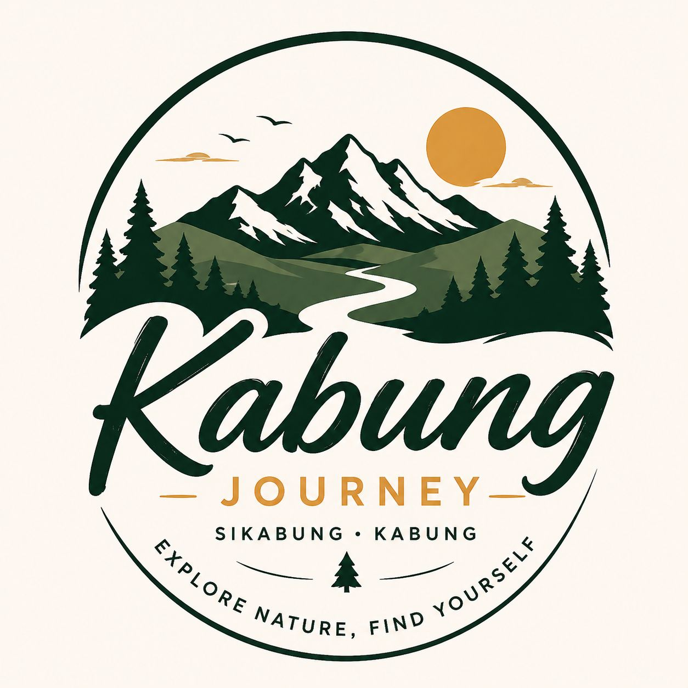
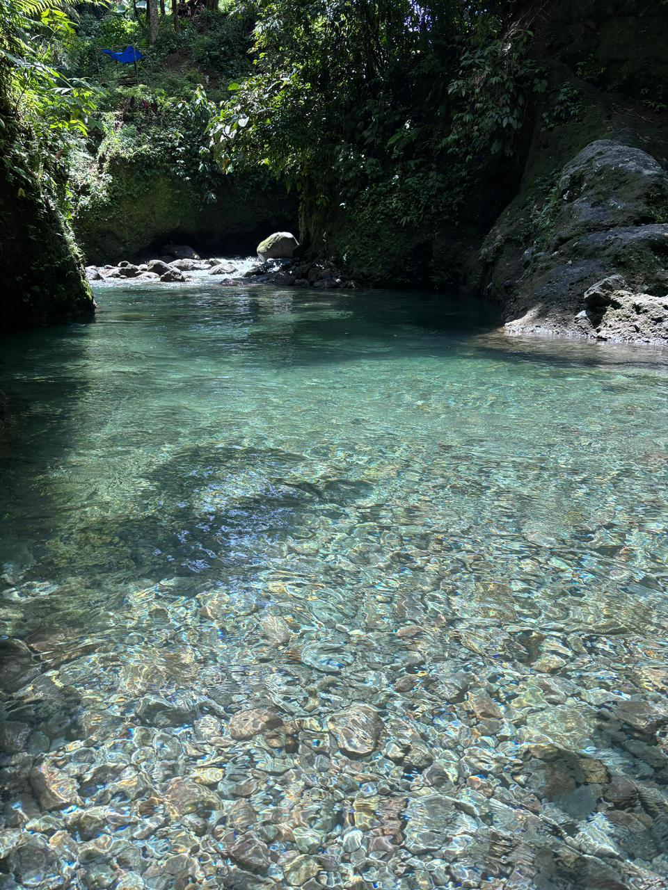
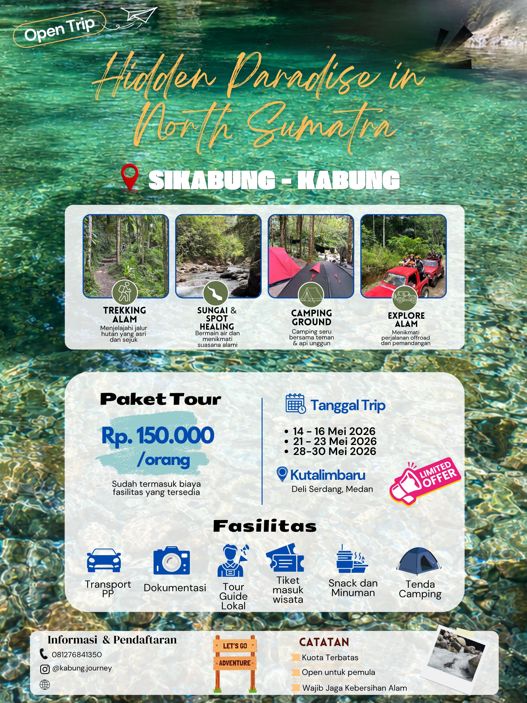
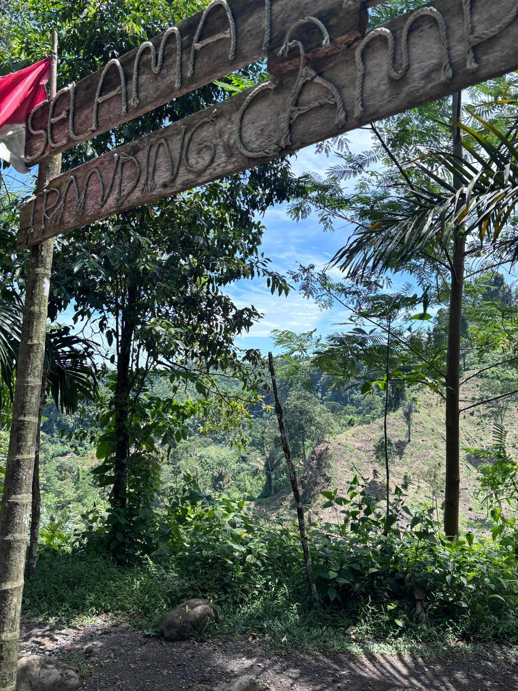
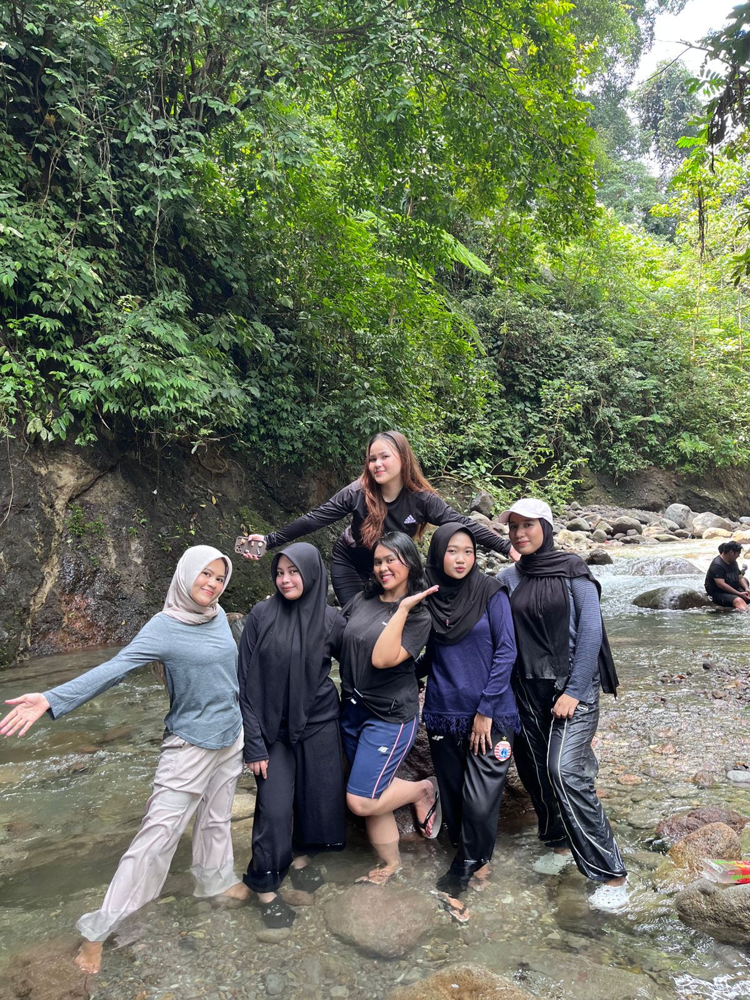
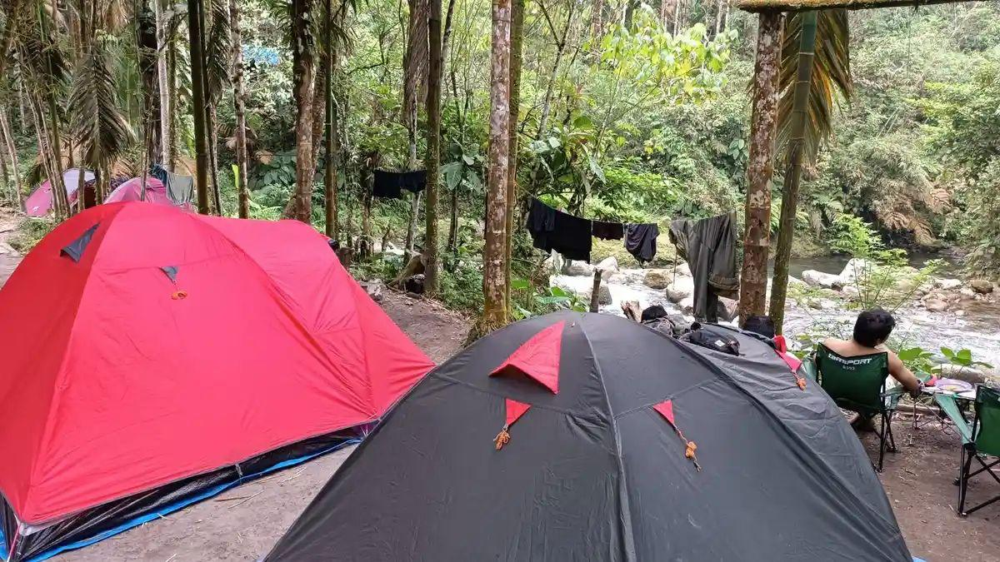
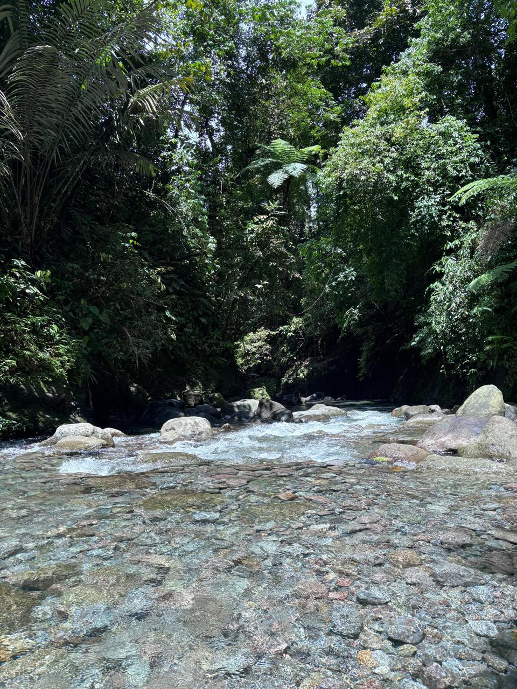
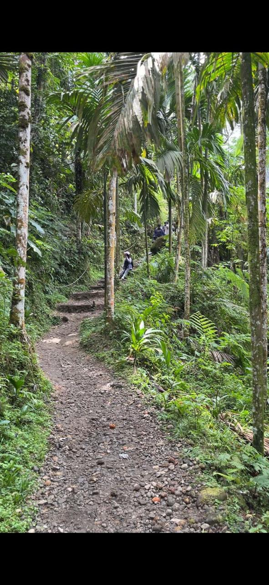
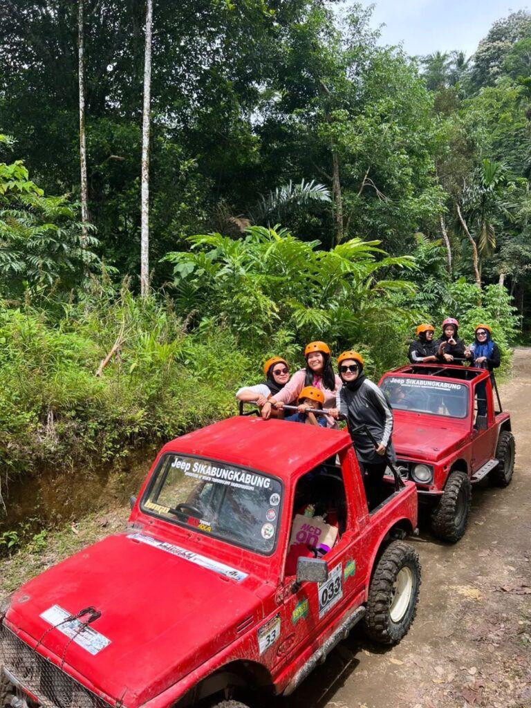

Kabung JourneySebagai salah satu syarat memenuhi tugas mata kuliah Kewirausahaan Tahun 2026 Program Studi Manajemen Sumberdaya Perairan Dosen Pengampu: Ibu Vindy Rilani Manurung, S.Pi., M.P
Hidden paradise in North Sumatra where crystal-clear rivers, wild jungle trails, cozy camping nights, and thrilling off-road adventures come together in one unforgettable journey. Nature, adventure, and serenity await with Kabung Journey.
Explore Now
Sikabung-Kabung merupakan hidden paradise yg terletak di Kutalimbaru, Kecamatan Deli Serdang, Sumatera Utara yang menyuguhkan keindahan alam yang masih asri dan menenangkan.Dikelilingi hutan hijau, aliran sungai jernih, serta udara yang sejuk, tempat ini menjadi destinasi sempurna untuk melepas penat dari hiruk pikuk kota.
Nikmati pengalaman seru mulai dari trekking alam, healing di tepi sungai, camping bersama teman, hingga petualangan offroad yang memacu adrenalin. Sikabung-Kabung hadir untuk memberikan momen liburan yang sederhana, seru, dan tak terlupakan bersama alam.

Menjelajahi jalur alam yang asri dengan suasana hutan yang sejuk.
Sungai alami dan udara segar cocok untuk relaksasi dan healing.
Nikmati pengalaman camping dengan panorama alam indah.
Petualangan offroad yang seru dan menantang di alam bebas.






Sikabung-Kabung berada di kawasan wisata alam Sumatera Utara dengan akses yang mudah dijangkau wisatawan.